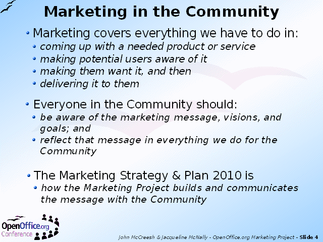

Notes:
The Community is fortunate in that the engineers have delivered a world class piece of software. With the upcoming version 2.0 it will be better than ever.
However,history is full of examples where good technology plus poor marketing has meant failure. Unfortunately, there are also many examples where mediocre technology plus first class marketing has led to market domination.
The main challenge facing the OpenOffice.org community is not a technical one - it is a marketing one.
The people attending the Conference understand "the OpenOffice.org story", and show tremendous commitment to the product and the Community. The purpose of the Strategic Plan is to capture this understanding and spirit, and spread it worldwide through all our Community members and users.
This is how we will make OpenOffice.org the leading international office suite.